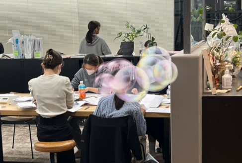
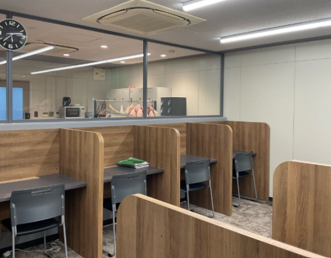

大阪公立大学専門 桜灯塾は、大阪公立大学への合格に特化した専門塾です。
指導経験豊富なプロ講師と、最新の入試トレンドを熟知し、自ら戦略的に試験を突破した選抜された大阪公立大学医学部生の講師が30名以上。この二つの力が合わさった指導体制が、桜灯塾最大の強みです。推薦入試・一般入試を問わず全学部に対応し、あなたの志望・現状・目標に合わせた完全個別指導で合格へと導きます。
在籍する学生講師は全員が大阪公立大学医学部医学科の現役学生。大阪星光・清風・四天王寺、東大寺学園、北野、咲くやこの花高校の出身者をはじめ、個別試験で9割・満点を獲得して合格した実力者ばかりです。受験戦略の立て方から科目の本質的な理解まで、教科書レベルの知識を受験で使いこなせるように、合格者の常識を伝授します。

完全紹介制で採用した講師の中から、出身高校・相性・志望学部・目標点数に合わせて担当講師をマッチング。プロ講師と学生講師が連携する二人三脚体制で、あなただけの学習プランを組み立てます。

月額59,800円～で自習室・授業ともに通いたい放題。朝のZoomオンライン自習にも対応しており、自宅でも集中できる環境を整えています。大阪公立大学合格への最初のステップは勉強「量」の確保。講師のマネジメントにより、「質」の向上も実現します。
※日曜日はオプション対応となります。
大阪公立大学専門 桜灯塾が大阪公立大学に強い理由は、情報の「質」と「量」にあります。在籍する30名以上の学生講師はいずれも大阪公立大学医学部医学科の現役学生。さらに、2023年度の医学部医学科推薦入試合格者全15名中11名や、以前の合格者からも直接ヒアリングを重ね、一般には出回らないリアルな情報を蓄積し続けています。経験値と最新情報。この両輪があるからこそ、他塾には真似できない指導が可能です。
大阪公立大学専門 桜灯塾の指導は、合格から逆算して設計されています。幾度にもわたる合格実績と、実際の合格者へのヒアリングをもとに「いつまでに・何を・どのレベルまで仕上げるか」を明確にした独自カリキュラムを構築。推薦を視野に入れながら一般入試の学力も同時に高めていくことが可能です。
共通テスト・個別試験
数学・英語・理科・現代文の各科目を網羅。志望学部・現在の実力・目標得点に応じて、合格から逆算した個別のロードマップを設計します。
志望理由書・面接
志望理由書の作成から集団面接の練習まで全プロセスに対応。大阪公立大学医学部の推薦入試に合格した現役医学部生とプロ講師と学生講師の2名体制で手厚く仕上げていきます。事前準備で圧倒的な差を付けられることを保証します。
2025年度 医学部医学科
学校推薦型選抜 2名合格